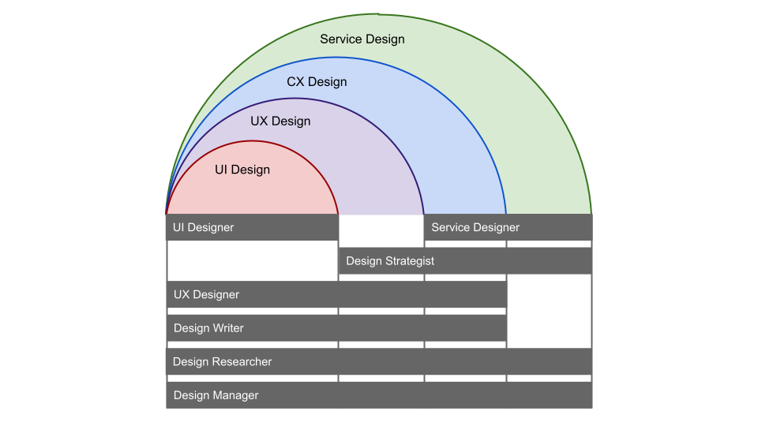

Understanding Design and Designer Roles
Introduction
This document helps you understand design and the different roles involved. That understanding will help you identify specific considerations in your need for designers, and therefore paves the way for you to hire the right designers who meet your needs.
In this document you’ll find answers to:
- What is the design spectrum?
- What are the different methodologies of design in the design spectrum?
- What are the types of designer roles and what does each do?
- How are designer roles related to design methodologies?
Overview
Design as Problem Solving
What is design? Here, we try to give you a short and simple answer that sets the stage for the rest of this document.
The scope of design involves three things (Figure 1):
- The Problem Space
- The Inbetween
- The Solution Space

Figure 1: The problem space, the solution space, and the inbetween.
The Problem Space is where the design starts, with designers onboard. You aim to:
- Understand the presumed problem deeply and thoroughly
- Make assumptions about the problem (but NOT about the solution) for later validation
- Define the scope and the objectives of the effort for solving the problem
The In-between is where the focus of the design activities transition from the problem to the solution. You aim to:
- Generate ideas about potential solutions
- Define the potential approach to implement the solutions
- Verify those ideas and refine the approach
The Solution Space is where the design effort focuses on delivering solutions, with well-elaborated ideas and a well-refined approach to implement them. You aim to:
- Build the solution iteratively
- Test the solution frequently
- Refine the solution based on feedback and evidence
In the above sense, design is a problem solving approach that enables you to frame your problem effectively, explore solutions creatively, build a solution efficiently, and achieve your goals satisfactorily.
The Design Spectrum
Design consists of a spectrum of methodologies that range in scope, i.e. how zoomed in to the problem and solution space we want to be. We illustrate these in Figure 2.
It’s important to understand that designing holistically involves all of these methodologies across the lifecycle of a product or service, and that no single methodology is more or less important than the others.

Figure 2: The four levels of design on a spectrum
We briefly define each methodology here and then go into more details below:
Service Design (Level 4) concerns all products and services across the organization and all people involved, including end-users on the receiving end and employees on the delivery end. It focuses on the overall experience and on how products and services work together to define the organization’s mission and deliver on its vision.
Client/Customer Experience (CX) Design (Level 3) concerns the quality of a particular user group’s experience over their end-to-end journey with an organization and focuses on delivering value to that group. In other words, it’s User Experience (UX) over a long period of time (see next).
User Experience (UX) Design (Level 2) concerns the quality of a person's experience when interacting with a specific part of a product or service to complete a specific task. It focuses on the utility, desirability, and experience with that task.
User Interface (UI) Design (Level 1) concerns the individual interactions that an end-user has with a particular component of a product or service. It focuses on making those single interactions simple, effective, and efficient.
To help you understand the difference in scope of these methodologies, here is an example of how this might apply to various design challenges of a bank (Figure 3):
Figure 3: Four levels of design for a bank
Those four levels of design have different focuses in many different ways. They’re specifically different in how each finds its balance regarding two dimensions (Figure 4):
- The strategic and the tactical side of solving problems
- The experiential and consequential aspect of the solution
Figure 4: Characteristics of the four levels of design (Level 1: UI Design, Level 2: UX Design, Level 3: CX Design, Level 4: Service Design)
Service Design
Service design is the broadest methodology in scope. It considers all of the people involved: both clients on the receiving end of a product or service, and employees on the delivery end. It also considers how various services interact with one another, and how the organization can create or innovate on services to deliver its mission and achieve its vision.
“Service design helps organizations see their services from a customer perspective. It is an approach to designing services that balances the needs of the customer with the needs of the business, aiming to create seamless and quality service experiences. Service design is rooted in design thinking, and brings a creative, human-centered process to service improvement and designing new services. Through collaborative methods that engage both customers and service delivery teams, service design helps organizations gain true, end-to-end understanding of their services, enabling holistic and meaningful improvements.”
Source: This Is Service Design Doing: Applying Service Design Thinking in the Real World, by Marc Stickdorn, Markus Edgar Hormess, Adam Lawrence, Jakob Schneider
The three main components of service design are: people, props, and processes.
People are anyone who creates or uses a service, including anyone who may be indirectly involved (e.g. employees, partners, users).
Props are the artifacts or products that we use to perform the service, such as physical space, webpages, social media or digital files.
Processes are the workflows, procedures or other performed by the employee or user, such as resolving issues over support, or sharing a file.
Service design is not simply about designing a service. It also addresses how an organization gets something done, fills in organizational gaps, and fulfills the purpose of the organization.
Client/Customer Experience (CX) Design
Client or Customer Experience (CX) design is a step down in scope from Service Design. It considers the end-to-end journey of a particular client group across all of an organization’s products and services and considers this journey from the perspective of those clients.
Often, CX cuts across business or product lines, since the client, over the lifetime of a client’s experience with an organization, will interact with many facets, channels, and touchpoints.
The CX journey starts as easily as the client’s initial awareness of the organization and its products and services. It then considers how the organization can add value to the client through various products and services.
Framed another way, CX is a subset of Service Design that only considers the products and services targeted to a particular client group.
Another way of looking at CX is that it comprises many UX touchpoints (see below).
User Experience (UX) Design
User Experience (UX) Design is a methodology that focuses on the experience of a particular client group with a particular product or service, or even a component of a particular product or service.
It’s a methodology that creates tangible things that a user will interact with directly. It focuses on things like creating useful solutions that are easy to use. It’s about enhancing the experience that people have while interacting with a product, and making sure they find value in what the product provides.
Questions about “why” we might need a particular product or touchpoint are addressed at a higher level of design (often CX Design) as well as questions about how they fit into the organization (often Service Design).
It’s a misconception that UX is only about “digital.” UX is about any touchpoint where a user interacts with a product or service. For example, the interaction between a user and a call centre is subject to UX design.
User Interface (UI) Design
User Interface (UI) Design focuses on a single element of a touchpoint. For example, the word we use on the button on a webpage to pay for items in the cart, the colour of that button, or the placement of that button on the page.
UI Design is all about understanding and anticipating specific tasks that a user is trying to accomplish with the touchpoint, and ensuring that the touchpoint has elements that are easy to access, understand, and use, and to facilitate those tasks in an easy and efficient way.
Back to top
Designer Roles
The Big Picture
Different designer roles can assist you in different levels of design (Figure 5):

Figure 5: Designer roles’ coverage in the four levels of design spectrum
A designer’s role does not necessarily apply to only one level. For example, a User Experience (UX) Strategist might be involved in both User Experience (UX) Design and Client Experience (CX) Design.
Common designer roles include the following general roles. Note, there are many different names for these roles. Or purpose is to break them down as we have to describe them in the broadest and clearest sense:
- Service Designer
- Design Researcher
- Design Writer
- UX Designer
- UI Designer
- Design Strategist
- Design Manager
- UX Unicorn
Service Designer
A Service Designer plans, develops, and directs to improve the performance of a service, or to create new services. They make sure that the organization services that fulfill the client goals, help to understand how services fit together from the perspective of the client, and work to improve the overall experience for users across the organization.
A few of the responsibilities of a Service Designer include:
- Contextualizing the demand and helping to define the need for a service.
- Defining what success looks like and how to measure it.
- Personalizing the design approach and elaborate tailor-made specifications.
- Facilitating the internal communication in order to de-compartmentalize the services or stakeholders involved in the realization of the project.
- Alerting on the different options and modalities of the project’s implementation.
- Ensuring the coherence of the project by putting the organization’s needs and strategy into perspective.
A Service Designer can assist you in the following design levels:
- Service Design (Level 4)
- Client/Customer Experience Design (Level 3)
Design Researcher
A Design Researcher interacts with the user while simultaneously conducting quantitative and qualitative research to help the organization to make decisions based on the value of services.
A few of the responsibilities of a Design Researcher include:
- Creating user research strategies that align with design objectives.
- Conducting user research.
- Conducting and evaluating quantitative and qualitative research.
- Conducting usability studies with end-users.
- Asking questions, gathering data, and analyzing data.
A Design Researcher can assist you in the following design levels:
- Service Design (Level 4)
- Client/Customer Experience Design (Level 3)
- User Experience Design (Level 2)
- User Interface Design (Level 1)
Design Writer
A Design Writer writes about the product and service, and helps guide a user through the experience of using them, to make sure they achieve their goals.
They create the words that users read in a product or service so that the text is effective, concise and clear. Design Writers are also storytellers, who care about the content and getting attention from the users.
A few of the responsibilities of a Design Writer include:
- Helping people complete transactional and informational tasks
- Writing for accessibility (content that a wide range of people can use, including people with disabilities)
- Writing in plain language
- Using appropriate tone of voice in the writing
- Prioritizing important or relevant information
A UX Writer can assist you in the following design levels:
- Client/Customer Experience Design (Level 3)
- User Experience Design (Level 2)
- User Interface design (Level 1)
UX Designer
A User Experience (UX) Designer designs the conditions and context through which a user completes intended tasks in a product or service effectively, efficiently, and satisfactorily, largely by creating wireframes (sketchy outline of a product or service), task flows, or features specifications.
A few of the responsibilities of a UX designer include:
- Understanding and defining product specifications
- Defining the right interaction model and evaluating its success
- Developing wireframes and prototypes around customer needs
- Finding creative ways to solve UX problems (e.g. usability, findability)
- Working with UI designers to implement attractive designs
A UX can assist you in the following design levels:
- Customer Experience Design (Level 3)
- User Experience Design (Level 2)
- User Interface Design (Level 1)
UI Designer
A User Interface (UI) Designer designs the interface (digital or otherwise) through which a user or customer engages with a product or service.
A few of the responsibilities of UI designer include:
- Collaborating closely with developers, copywriters and UX designers
- Creating and improving wireframes, prototypes, style guides, and user flows
- Communicating design ideas and decisions
A UI Designer can assist you in the following design levels:
- User Interface Design (Level 1)
Design Strategist
A Design Strategist balances how design is implemented. They establish a solid design foundation and best practices for the team and the projects.
A few of the responsibilities of a Design Strategist include:
- Collecting and assimilating customer data to guide design
- Ensuring the design teams align their direction with their organization’s business plan
- Facilitating strategic, customer-centric decision making
- Building relationships across the organization to help the design effort succeed
A Design Strategist can assist you in the following design levels:
- Service Design (Level 4)
- Customer Experience Design (Level 3)
- User Experience Design (Level 2)
Design Manager
Like any other kind of manager, a Design Manager manages the design team and how they fit into the broader scope of design goals or projects.
The role of Design Manager may bear different titles in different organizations, depending on the scope of the responsibilities. Service Design Manager, Client Experience (CX) Manager, User Experience (UX) Manager, and User Interface (UI) Manager are all incarnations of Design Manager, with each of them addressing a specific area of design, while all of them focusing on the design aspect of management.
A few of the responsibilities of a Design Manager include:
- Developing the people on the design team
- Supervising design professionals on the team
- Working with the organization to find out what it truly needs from the team
- Identifying opportunities for design efforts
- Creating and managing new design projects
- Creating and managing new products (from a design perspective)
- Reporting to and communicating with senior management on design strategy, design projects, and product design
A Design Manager can assist you in the following design levels:
- Service Design (Level 4)
- Client/Customer Experience Design (Level 3)
- User Experience Design (Level 2)
- User Interface design (Level 1)
UX Unicorn
Unfortunately, UX Unicorn does not exist.
This concept has misled people to believe that one person can fulfill all of their design needs. That is hopelessly far from the truth.
Chances are, it’s extremely unlikely for you to find one person who can do every job within the scope of design, yet another reason why it is so important to really identify and specify your needs properly.
There are indeed designers with combinatory skill sets who can do several different things in design, and you may need them more often than you think. But also know that, nowadays, design work is almost always collaborative.
“...most artists, if they're honest, are never solo artists...” — Thom Yorke
A UX Unicorn can assist you in the following design levels:
- (None) If anyone told you otherwise, beware of snake oil.
Back to top
Additional Resources
- Service Design 101
- What is Service Design
- The Principles of Service Design Thinking - Building Better Services
- This is Service Design Doing Method Library
- What is Customer Experience Design
- The Definition of User Experience (UX)
- DesignOps 101
- What a UX Career Looks Like Today
- UX Writing, UX Copywriting, Content Strategy, and Content Design are not the same job
- What is UX Research
- Introduction to UX Strategy
- What is UX Management
- What is a UX Manager
- Unicorns, Foxes, Hedgehogs, the UX Design Bestiary
- The Rise of UX Writer
Back to top
Getting Help
Centre of Expertise for Human-Centred Design can help you assess your hiring needs for designers.
To contact us, please send us an email, or join our official Microsoft Teams group.
Terms of use
Materials on this website were produced and/or compiled for the purpose of providing Canadians with access to information about the programs and services offered by the Government of Canada. It is subject to the following Terms and conditions.
- Date modified: